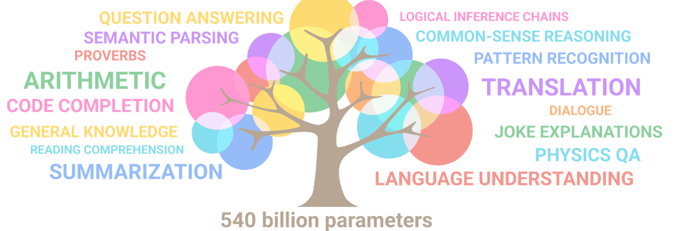
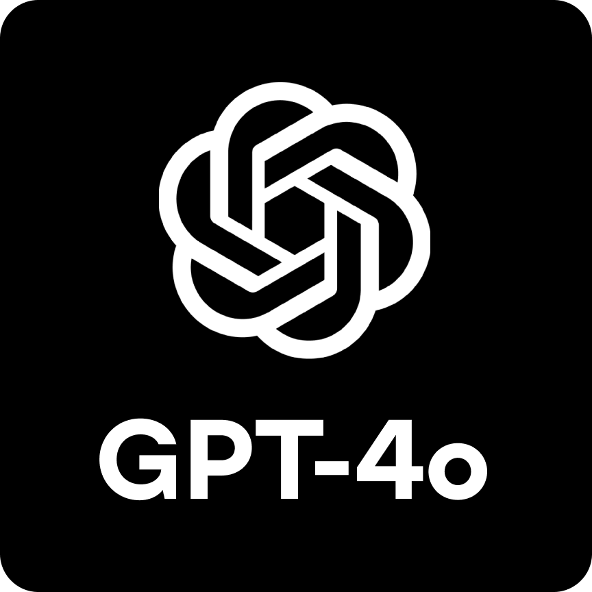
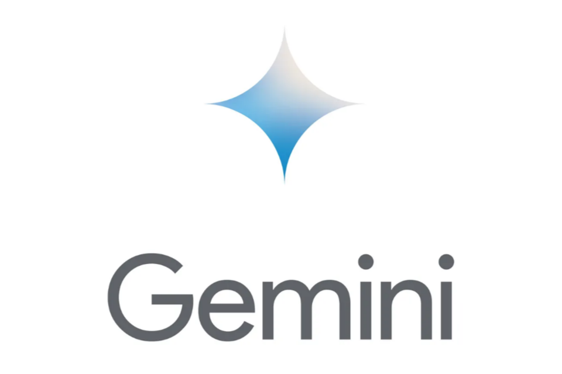
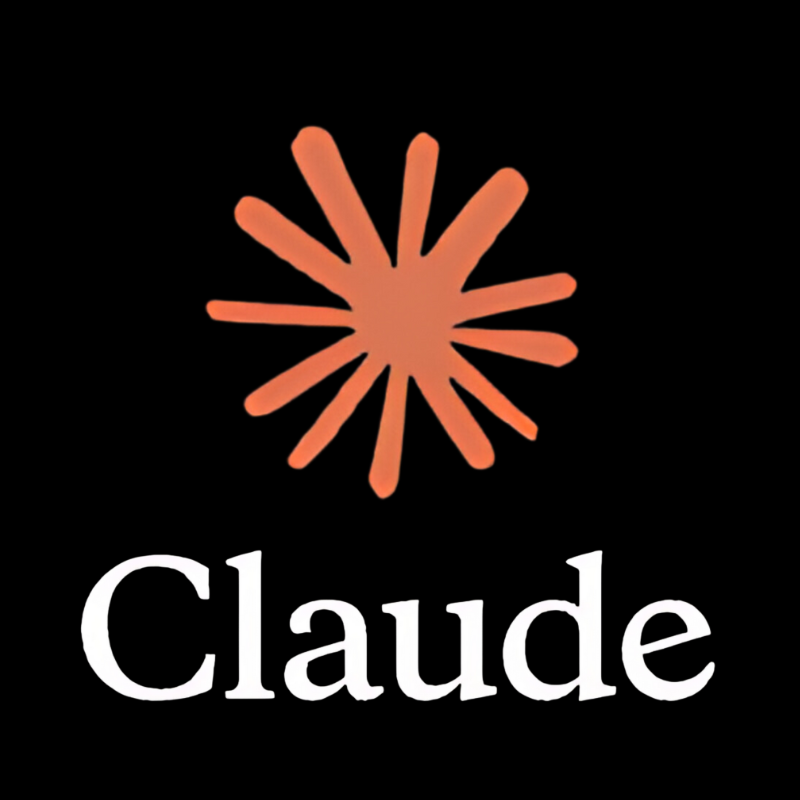
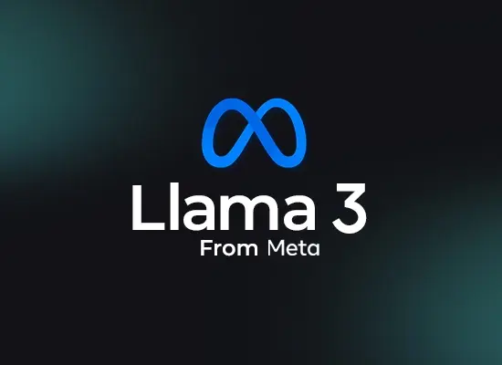

대형언어모델(LLM)의 원리
트랜스포머는 어떻게 글을 쓰는가
◆ 오늘의 학습 목표
ChatGPT를 비롯한 AI 서비스들이 어떻게 글을 생성하는지 그 원리를 이해하고, 직접 활용하는 시간입니다.
✦ 언어 모델이란?
Language Model
텍스트, 이미지, 오디오 등 다양한 데이터를 학습하여 언어의 맥락과 의미를 이해하고, 입력에 대해 가장 적절한 응답을 생성할 수 있는 인공지능 모델
언어 모델 (LM)
텍스트 데이터를 학습한 기본 모델. 문장의 패턴과 문법을 이해
대형 언어 모델 (LLM)
수천억 개의 매개변수로 학습한 거대 모델. 맥락 이해와 추론 능력 보유

◆ 다양한 대형언어모델
전 세계 기업들이 경쟁적으로 개발 중

GPT-4o
OpenAI의 최신 멀티모달 모델

Gemini
Google DeepMind의 차세대 AI

Claude
Anthropic의 안전 중심 AI
Grok
xAI의 실시간 정보 AI

Llama 3
Meta의 오픈소스 LLM
Mistral
프랑스의 경량 고성능 LLM
✦ GPT란 무엇인가?
OpenAI에서 제작한 대표적 LLM
GPT의 핵심 엔진인 트랜스포머가 어떻게 작동하는지 알아봅시다
◆ 트랜스포머의 핵심 원리
다음에 올 단어를 확률적으로 예측한다
학습한 지식과 이전 문맥을 바탕으로 다음 단어를 통계적으로 예측하는 능력을 지님
✦ 작동 과정 ① 토큰화
문장을 작은 조각(토큰)으로 나누기
컴퓨터는 글자를 직접 이해할 수 없습니다. 먼저 문장을 토큰(token)이라는 작은 단위로 분리합니다.
◆ 작동 과정 ② 셀프 어텐션
단어들 사이의 관계를 파악하기
트랜스포머의 핵심 기술 셀프 어텐션(Self-Attention)은 문장 속 각 단어가 다른 단어와 얼마나 관련 있는지를 계산합니다.
Q, K, V 연산
각 토큰이 Query(질문), Key(열쇠), Value(값)로 변환되어 서로의 관련성을 점수로 계산
왜 중요한가?
"새가 듣고"와 "쥐가"의 대구 관계를 파악하여 다음 단어 예측의 정확도를 높임
✦ 작동 과정 ③ 문장 완성
한 단어씩 예측하여 글이 완성된다
예측을 한 단계씩 반복하면 문장, 문단, 나아가 하나의 글이 완성됩니다. ChatGPT가 글자를 하나씩 출력하는 이유가 바로 이것입니다.
◆ 프롬프트가 중요한 이유
같은 LLM이라도 질문 방식에 따라 결과가 완전히 달라진다
단순한 프롬프트
→ 원하는 수준/형식 불명확
→ 불필요한 정보 다수 포함
구조화된 프롬프트
→ 원하는 형식으로 출력
→ 핵심만 간결하게 정리
프롬프트는 LLM에게 주는 지시문입니다. 구체적이고 구조화된 프롬프트일수록 원하는 결과를 정확히 얻을 수 있습니다.
✦ 구조화된 프롬프트의 작동 과정
프롬프트가 트랜스포머 내부에서 처리되는 흐름
프롬프트의 각 요소(역할 맥락 지시 형식)가 어텐션을 통해 생성 과정에 직접 영향을 미칩니다. 구조화할수록 결과가 정확해집니다.
◆ GPT의 멀티모달 능력
텍스트를 넘어 다양한 형태의 데이터를 처리
입력 (Input)
- 텍스트 — 질문, 명령, 대화
- 이미지 — 사진, 그래프, 문서
- 오디오 — 음성, 음악
- 비디오 — 영상 분석
출력 (Output)
- 텍스트 — 답변, 번역, 요약
- 이미지 — AI 이미지 생성
- 오디오 — 음성 합성(TTS)
- 코드 — 프로그래밍 코드 생성
✦ 활동: 역방향 프롬프트 추론
결과물을 보고 프롬프트를 역추론하라
-
01
결과물 관찰
선생님이 보여주는 AI 출력물(표, 시, 코드 등)을 분석한다
-
02
프롬프트 역추론
"이 결과를 만든 프롬프트는?" — 역할/맥락/지시/형식을 포함하여 작성
-
03
검증 실험
작성한 프롬프트를 LLM에 직접 입력하여 유사한 결과가 나오는지 확인
-
04
비교 토론
원본 프롬프트 공개 후 내 프롬프트와 비교 — 차이점과 개선점 토론
수고하셨습니다
LLM의 원리를 이해하고 활용하는 첫 걸음을 내딛었습니다
오늘의 핵심
- ✦ LLM은 방대한 데이터를 학습한 대형 언어 모델이다
- ✦ GPT는 Generative Pre-trained Transformer의 약자이다
- ✦ 트랜스포머는 다음 단어를 확률적으로 예측하여 글을 생성한다
- ✦ 셀프 어텐션으로 단어 간 관계를 파악하는 것이 핵심이다